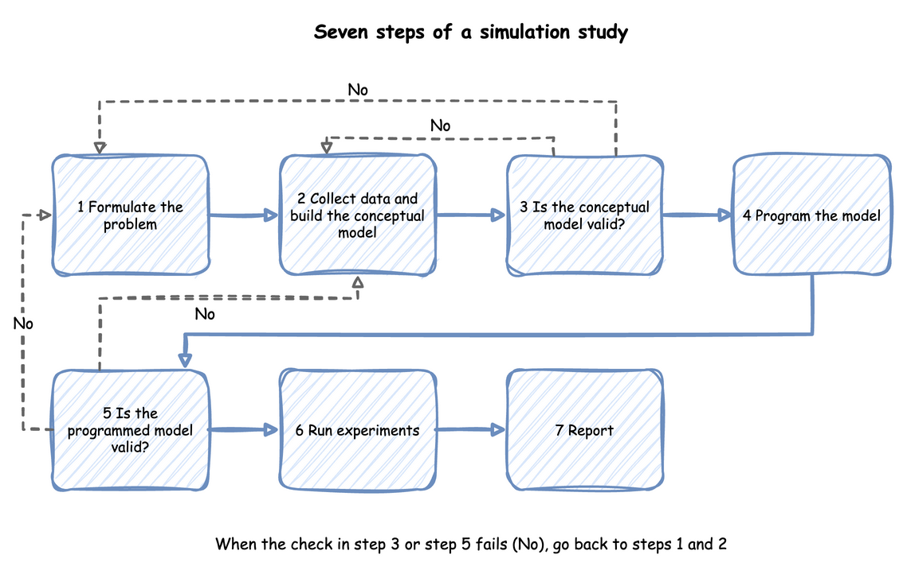

A Simulation Study
Building a model is one step of a simulation study, and often not the largest. This page walks through the whole study, from the question to the report, with the packing shop as the example. Each step says what to produce and names the tutorial page that does it for the shop. The Complete Model runs every step in order.
The steps follow Law's seven-step approach. Two steps are checks: Check the Assumptions checks the conceptual model, and Build and Check the Model checks the programmed model. When either check fails, the study goes back to Ask One Question and Conceptual Model and Data, because the question or the conceptual model may need to change.

Law notes that programming the model is only 25 to 50 percent of the work of a sound study, despite the common view of simulation as a programming exercise.
What You Will Learn
- how to write a question that a study can answer;
- what a conceptual model holds, and how to choose the inputs;
- how AIC and the KS test score a fitted distribution;
- how the assumptions and the model are checked;
- how an experiment answers the question;
- what a report of the study states.
Ask One Question
In the Tutorial
The shop's question is: how many packers keep the mean wait under 10 seconds in the busy hour? The measures are the mean wait of an order and how busy the packers are. The question also fixes the period (the busy hour), the system (the packing area, not the whole warehouse) and who decides (the shop manager).
Why It Matters
A study with no well-defined objective cannot say when it is finished, and Law lists this first among the pitfalls. Without a specific question the right level of model detail cannot be set either: every part of the warehouse could be modelled, and nothing says which parts matter.
How to Use It
Write the question and its measures down before building anything. Name the measure as a statistic the model publishes, such as tasks.pack_order.wait_mean, and the value that decides the answer, such as 10 seconds. An experiment file can state the question and check the decision rule, as Comparing Designs does.
What the Result Means
Queues and Capacity answers the question: 3 packers. Trusting Results measures the mean wait of an order with 3 packers: 2.32 ± 0.20 seconds, the mean of 40 replications with the half-width of its 95% interval. Those runs use the measured packing times and a 2-minute warm-up, and other pages run the hour in other ways. The whole interval is far below 10 seconds, so the answer holds at this precision.
Conceptual Model and Data
In the Tutorial
The shop's conceptual model says what the model includes, the assumptions it makes and the data it needs:
- Orders arrive one at a time, at a rate that does not change during the hour.
- A packer takes the next order from one queue, in order, and packs it.
- Packing takes 1.5 seconds on average. The first model uses a constant 1.5 seconds, and Choosing Inputs replaces it with the times measured at the bench.
- Pickers, stock and delivery are outside the model.
Why It Matters
Law calls this the assumptions document. It is what the people who know the shop check, and what the model is checked against. It also decides how much detail goes in. Law warns against building one model element for each element of the real system: more detail costs run time, can miss the deadline and can hide the factors that matter.
Each input is an estimate until it is measured. For the shop these are the arrival rate and the packing time.
How to Use It
Collect what is known about the system and write the document before writing code. Take the data from the real system where it exists, choose a distribution for each input, and test how much the choice matters. Choosing Inputs compares the candidate distributions, and Fitting the Inputs fits them to measured times. Add detail only when it can change the decision. Model Parts lists the parts a model can have.
What the Result Means
A model with an input nobody has measured is still usable, as long as the study tests how far the answer depends on it. Parameter Sweeps does this for the arrival rate: with three packers the wait depends strongly on the rate, and with four it does not.
AIC and the KS Test
In the Tutorial
Fitting a distribution to measured times gives a candidate from each family, such as a gamma or a lognormal, and two scores say how well each candidate matches the data. For the shop's 40 packing times, Fitting the Inputs gives the triangular an AIC of 56.68 and the gamma 56.79.
Why It Matters
The two scores measure different things:
- AIC, Akaike's information criterion, scores how likely the data is under the fitted family, with a penalty for each parameter the fit chose: 2k − 2 × the log-likelihood, where k is the number of parameters. Lower is better.
- KS, the Kolmogorov-Smirnov statistic, is the largest gap between the share of the data below a value and the share the family puts below it. Its p-value is the chance of a gap at least that large if the data came from the family.
How to Use It
desflow fit fits each family to a column of measured values and prints both scores, as Fitting the Inputs shows. Compare the AIC of two families on the same data: only the difference means anything. Use the KS p-value to rule a family out: a small p-value, such as below 0.05, is a reason to reject it.
What the Result Means
By a common guideline, an AIC difference below 2 does not tell two fits apart, so the triangular and the gamma fit the shop's times equally well. When the family was fitted to the same data, the KS p-value is approximate and tends to be too high. A good score therefore does not settle the choice. Run the model with each close candidate and check whether the answer changes, as Fitting the Inputs does.
Check the Assumptions
In the Tutorial
Ask the shop manager whether arrivals really are steady in the busy hour, and whether a packer ever does anything else. If orders come in a rush at the start of the hour, the first assumption is wrong, and Changing Demand shows the model that follows.
Why It Matters
Law calls this step a structured walk-through. It finds wrong assumptions before code depends on them. It also makes the results more credible to the people who will act on them, because they have checked what the model assumes.
How to Use It
Walk the people who know the system through the assumptions document, one line at a time. Record each assumption they confirm, and change the document where they correct it. An experiment file keeps the agreed assumptions, the source of each input and the limits of the model, as The Complete Model does.
What the Result Means
An assumption the owner of the system confirms can go into the model. One they correct sends the study back to the conceptual model, before any code is written.
Build and Check the Model
In the Tutorial
The shop's model is built in First Simulation and extended in the tutorials that follow it. Checking a Model checks it: it traces fixed inputs, pushes the inputs to extremes, compares the model with queueing theory and with the real shop, and tests its sensitivity.
Why It Matters
A model can run without errors and still be wrong. The checks are of two kinds, which Checking and Validating describes. Verification checks that the program does what the conceptual model says. Validation checks that the model is a good enough picture of the shop for the question.
How to Use It
Verify by reading the trace, working a case by hand, and comparing the statistics with each other. desflow explain --verify compares the model with the queueing formulas where they apply. Validate by comparing the model's results with the real shop's where there is data, and by testing its sensitivity to the inputs. Queueing Basics gives the formulas that check the queue.
What the Result Means
A model that passes the checks is fit for the question it was checked against, not for every question. A failed check sends the study back to the conceptual model or to the code.
Run the Experiments
In the Tutorial
Comparing Designs compares three packers with four. Over 20 replications of each design with the same seeds, a fourth packer cuts the busy hour's mean wait by 2.21 ± 0.31 seconds (the mean difference and the half-width of its 95% interval).
Why It Matters
An experiment is a set of runs designed to answer the question. One run of each design can show a difference that comes from the random numbers alone. Several replications, with the same seeds for each design, give an interval for the difference.
How to Use It
Decide the run length, the warm-up and the number of replications, then run each design and compute an interval for each measure. Output Analysis explains these choices, and Trusting Results makes them for the shop. desflow experiment runs the designs and the checks from one file.
What the Result Means
The interval for the difference, 2.21 ± 0.31 seconds, lies wholly above 0, so the fourth packer shortens the wait at this precision. Whether 2.21 seconds is worth a packer is the shop manager's decision, not the model's.
Report the Result
In the Tutorial
The Complete Model ends with report.md. It states the comparisons and the checks, the observed comparison, the assumptions, where each input came from, and the limits of the model.
Why It Matters
A reader who was not part of the study acts on the report alone. The report must let that reader judge how far to trust the answer, and repeat the study.
How to Use It
State the answer to the question first, then the evidence for it. Say what the model includes and leaves out, what the inputs were and where they came from, how the model was checked, and how precise each result is. desflow report writes the report from an experiment's results. Readiness and Reporting lists what to include, and Common Mistakes lists the errors that make a study wrong.
What the Result Means
A study often repeats. A result that surprises is a reason to check the model again, and a changed question is a reason to change the model. The steps are an order of work, not a one-way path.
Key Takeaways
- Write one question, its measures and the value that decides it, before building anything.
- Write the assumptions down, and have the people who know the system check them.
- Choose each input from data where it exists, and test how much the choice matters.
- Verify the program and validate the model before trusting a result.
- Answer the question with intervals from replications, and report the answer first, with its limits.
Sources
- Law, "How to Conduct a Successful Simulation Study" (Winter Simulation Conference, 2003), which gives the seven-step approach. We read the paper in full.
- Wikipedia: the Akaike information criterion and the Kolmogorov-Smirnov test.
- The wording and the shop example are our own.